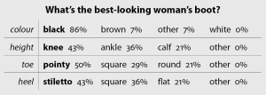

Made for walking
I fell in love this winter.
Solid character that exudes strength, faithfulness and longevity. Soft to touch, with tight-hugging curves and a sleek black exterior. My perfect match. I had been searching for a while when I came across them in a small boutique shoe shop. I don’t frequent such shops, but I couldn’t resist going in just to have a look, especially when the entire window display consisted solely of boots. My “perfect match” was a $450 pair of black, knee-high, Italian leather boots. Exquisite craftsmanship, truly beautiful. My purse refused. I still dream of them sometimes …
I was recently recounting this story over dinner to a bunch of friends, and the conversation grew into a large, near-heated discussion of opinions of boots – black knee-high ones in particular. Most of the females thought they were a must-have in any respectable wardrobe (mine is not respectable yet). But the males were, rather surprisingly, quite opposed to them. I was intrigued. To cut a long story short, the discussion resulted in the commission of this article by The Editor himself. My friend Sunny and I set to work, researching a small group of men to find out what guys really think about knee-high leather boots.
What we asked them was this: In the past, knee-high black boots have been associated with the red-light district, miniskirts, and dodgy street corners. In recent years, however, they have become a must-have in every woman’s wardrobe. What’s your take on this?
The overwhelming response was either a complete I-couldn’t-care-less attitude (Black boots – I have no thoughts about them at all. They’re just boots.), or the firm belief that they still belong on the legs of dangerous girls. (Yip, they’re hooker boots. Definitely skanky.)
Some thought the boots could still be redeemed: I think knee-high black boots do, at times, harbour those connotations, but that is no longer the rule. I don’t think there is anything inherently wrong with them, but they’re not for me.
One comment was very close to my personal opinion: There are still plenty of knee-high black boots that should not be worn outside the red light district and dodgy street corners. Boots with a miniskirt is a very strict no-no. I would probably make a whole heap of not-so-nice conclusions about a woman if she were wearing a miniskirt and high boots. However, the right boots, when worn with the right outfit, can look fantastic – on the right woman.
We then asked the guys to describe their perfect boot, given the options in the table shown. After fairly condemning responses on black knee-high boots, I was very surprised that the guys knew what a good boot should look like. Yes, contradictorily, black knee-high boots were at the top of the list, followed closely by ankle-height black boots.
Something that struck me when I looked at these results was that the best-looking boot in the eyes of men was the exact boot that made headlines early last year, when US Secretary of State Condoleezza Rice arrived at the Wiesbaden Army Airfield dressed all in black. She was wearing a skirt that sat just above the knee, and a calf-length coat. These boots were not hooker boots. They gave her an air of authority, yet oozed sophistication and class, with a hint of sexy femininity thrown in. (I would have loved to publish the photo here, but its copyright was nearly as expensive as my “perfect match” boots. Have a good look at http://tinyurl.com/k9cfr.)
I’m left with some serious questions. Why this surprising contradiction? Why do most guys say they don’t like the look of knee-high black boots, yet when asked what they do like, that is exactly the boot they pick? Could it be that there is a certain magnetic pull because the boots can be sexual if worn in a provoking way, and men find them off-putting yet irresistible? Could it also be that men are scared by the idea of power these boots portray?
Some of you guys, why not write in and answer with a letter to the editor, and help us girls out of the confusion? Or maybe Nancy Sinatra already answered this question of power in the affirmative, in 1966: These boots are made for walking, and that’s just what they’ll do. One of these days these boots are gonna walk all over you.
Franci Hoyt and Sunny Stolte have more shoes between them than all of Christchurch and Masterton’s centipedes combined. And now they’re starting on boots ...